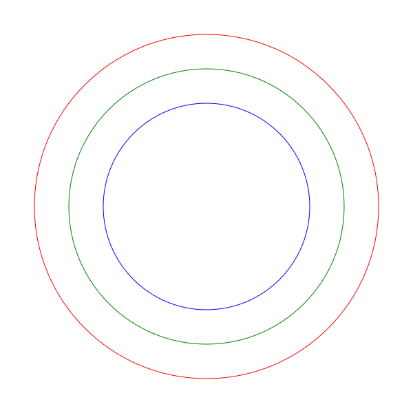
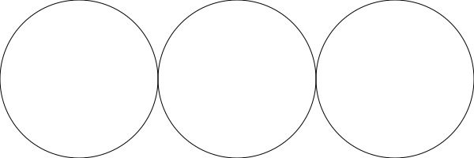

The API
The API of csketch is very simple. It has the following functions.
Drawing fuctions:
Style functions:
File functions:
Sketch Size:
draw_line
void draw_line(float x1, float y1, float x2, float y2);
The draw_line function draws a line. It takes x1, y1, x2, y2 - the coordinates of the end points of the line.
draw_line(-200, 0, 200, 0);
draw_line(0, -100, 0, 100);

draw_circle
void draw_circle(float x, float y, float r);
The draw_circle function draws a circle with radius r and center at point (x, y).
draw_circle(0, 0, 200);

set_fill
void set_fill(chat *color);
Sets the fill color. All the shapes that are drawn after calling this function will use the new fill color.
set_fill("red");
draw_circle(0, 0, 150);
set_fill("green");
draw_circle(0, 0, 200);
set_fill("blue");
draw_circle(0, 0, 250);

set_stroke
void set_stroke(chat *color);
Sets the stroke color. All the shapes that are drawn after calling this function will use the new stroke color.
set_stroke("red");
draw_circle(0, 0, 250);
set_stroke("green");
draw_circle(0, 0, 200);
set_stroke("blue");
draw_circle(0, 0, 150);

set_stroke_width
void set_stroke_width(float width);
Sets the stroke width. All the shapes that are drawn after calling this function will use the new storoke width.
set_stroke_width(0.5);
draw_line(-200, 100, 200, 100);
set_stroke_width(1);
draw_line(-200, 0, 200, 0);
set_stroke_width(5);
draw_line(-200, -100, 200, -100);
save_sketch
void save_sketch(char *filename);
Saves all the shapes drawn so far to an svg file.
draw_circle(0, 0, 200);
save_sketch("circle.svg");
Sketch Size
By default the size of the sketch is set to 600x600. You can change that by calling the set_sketch_size function. The current sketch size can be found by calling get_sketch_width and get_sketch_height functions.
set_sketch_size
void set_sketch_size(int width, int height);
Sets the size of the sketch.
// set the sketch width to 600 and height to 200.
set_sketch_size(600, 200);
draw_circle(-200, 0, 100);
draw_circle(0, 0, 100);
draw_circle(200, 0, 100);
save_sketch("three-circle.svg");

get_sketch_width
int get_sketch_width();
Returns the curent sketch width.
int w;
set_sketch_size(600, 200);
// draw a horizontal line
w = get_sketch_width();
draw_line(-w/2, 0, w/2, 0);

get_sketch_height
int get_sketch_height();
Returns the curent sketch height.
int h;
set_sketch_size(600, 200);
// draw a vertical line
h = get_sketch_height();
draw_line(0, -h/2, 0, h/2);

Colors
The set_fill and set_stroke function takes a color as an argument.
Color could be specified as a name or a hexadecimal color code.
red, blue, midnightblue, etc. are some examples are color names.
The special color name none can be used to disable stroke or fill.
Hexadecimal color codes can be specifed as short form like #fff with one hex digit for each of R, G and B compoments of the color or like #4B0082 with two hex digits for each component.
It is also possible to include transparency by adding two additional hex digits. For example #4B008280 is color Indigo with 50% transparency.
Refer to web colors for the list of valid color names and how to specify color in hexadecimal form.